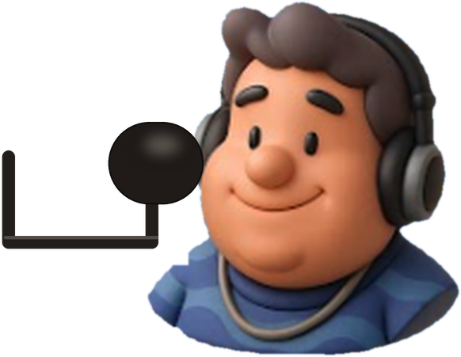

Narrador e criador do canal Klaus Basquete RJ TV e do blog Basquete RJ por Klaus Chagas, Klaus dedica quase 20 anos a registrar o basquete do Rio de Janeiro, com atenção especial às categorias de base e ao Campeonato Estadual da FBERJ.
Tudo começou em 4 de novembro de 2007, com um vídeo de família no YouTube, feito só para guardar memórias. Em 2009 o basquete entrou no canal, acompanhando a torcida Flabasquete. Em 2013, com os filhos jogando, nasceu a missão de acompanhar e apoiar a base do basquete carioca.
Desde então foram incontáveis horas atrás da câmera: jogos, campeonatos e torneios transmitidos com narração, atletas registrados nos primeiros passos na quadra e meninos que cresceram diante das lentes. Essas histórias são também dos atletas, pais, treinadores, clubes e torcidas.
Quer o jogo do seu filho transmitido? Famílias podem contratar a transmissão com narração e imagem Full HD, com agendamento antecipado.
